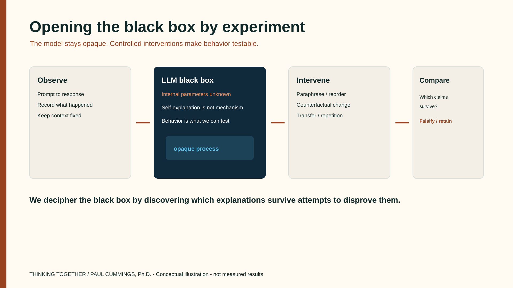

The research
Opening the AI Black Box
How can we discover what large language models are actually doing?
Can we understand an AI system not by trusting what it tells us about itself, but by designing experiments that reveal what it actually does?
Large language models can explain, predict, recommend, and solve complex problems. But a convincing response tells us surprisingly little about how the model arrived at it.
Why does an LLM choose one answer over another? What changes its behavior? Does it apply consistent strategies, or does its apparent reasoning depend on how a question is presented?
These questions can be investigated.
This research brings together computational social science, agent-based modeling, multi-agent systems, and controlled experimentation to study the behavior of AI systems. The aim is to move beyond asking models to explain themselves. We can construct experiments that reveal behavioral patterns, challenge competing explanations, and establish what the evidence actually supports.
What it means to open the LLM black box
An LLM accepts a prompt, processes it through a vast network of learned parameters, and produces a response. We know the broad computational architecture, but that does not mean we can readily explain why a particular response occurred.
- Why does changing one word in a prompt change the conclusion?
- Does the model apply a consistent strategy across different problems?
- When it gives an explanation, does that explanation reflect the process that produced the answer?
- Does its apparent reasoning survive when we change the context?
- Can we identify conditions under which its behavior becomes unreliable?
These are questions that can be investigated experimentally. Rather than treating an LLM as a source of authoritative answers, we can study it as a system whose behavior emerges under different conditions — the same stance computational social science takes toward complex social systems.
Deciphering the black box
We begin with observations, not assumptions about intelligence.
A model produces a response. We develop competing explanations for that behavior, change the experimental conditions, and observe what happens.
Does the behavior persist when we change the wording? Does it survive new scenarios? Can the model adapt when important assumptions change? Can another model reproduce the result?
Each experiment helps distinguish a reliable pattern from a coincidence, an artifact of the prompt, or an explanation that sounds plausible but lacks evidence.

Conceptual illustration — not a measured experimental result.
The goal is not to claim that a black-box experiment reveals the exact internal computations. It is to develop increasingly strong, falsifiable accounts of model behavior. We decipher the black box by discovering which explanations survive attempts to disprove them.


A concrete example: Does an LLM reason consistently?
Suppose an LLM is asked to choose between two economic strategies. It selects Strategy A and provides a persuasive explanation.
Did it compare the alternatives? Did it rely on superficial cues? Would it make the same choice if the wording changed?
We can design a controlled experiment.
| Experiment | What we change | What we investigate |
|---|---|---|
| Baseline | Original problem | Initial choice and explanation |
| Paraphrase | Wording only | Sensitivity to language |
| Reorder | Position of alternatives | Order effects |
| Counterfactual | One economic assumption | Response to relevant evidence |
| Transfer | Different economic setting | Generalization |
| Repetition | Random seed or sampling | Behavioral variability |
Repeated trials could reveal whether the model follows a stable behavioral rule, changes its answer for irrelevant reasons, or adapts appropriately to new evidence.
Even perfect consistency would not prove the model uses a particular internal reasoning process. It would establish a behavioral finding, which can motivate further mechanistic investigation.
Three levels of understanding
| Level | Research question | Method |
|---|---|---|
| Behavioral | What does the LLM do, and under which conditions? | Black-box experiments, repeated trials |
| Functional | What computational strategy best explains its behavior? | Competing models, causal interventions, transfer tests |
| Mechanistic | Which internal components produce the behavior? | Activation analysis, probing, causal ablation, interpretability methods |
CoAgentics is built strongly for the first two levels. Mechanistic work — with open-weight models and interpretability tools — is a natural extension of the same research program.
CoAgentics: an experimental workbench
CoAgentics provides the computational environment for conducting these investigations. It connects domain models, competing strategies, controlled experiments, statistical validation, an evidence registry, and a human research workbench.
Researchers can formulate hypotheses, compare model behavior, run counterfactual experiments, examine uncertainty, and preserve findings across investigations. The system separates observed behavior from interpretation. It does not treat an LLM’s self-explanation as proof of its internal reasoning.


See also how CoAgentics relates to Thinking Together.
From AI behavior to human understanding
Understanding the black box is only part of the research.
When experiments uncover reliable patterns, people can learn from them. They can discover new strategies, recognize hidden assumptions, improve their questions, and develop better ways to evaluate AI-generated conclusions.
The models also become subjects of continued investigation as researchers refine experimental conditions and challenge earlier findings.
This is the idea behind Thinking Together: people and computational models participating in a continuing process of observation, experimentation, and discovery.
We learn about AI by testing what it does. We learn together by using those discoveries to improve how we investigate and understand the world.
Teaching cases


Case diagrams are conceptual illustrations, not measured experimental results.